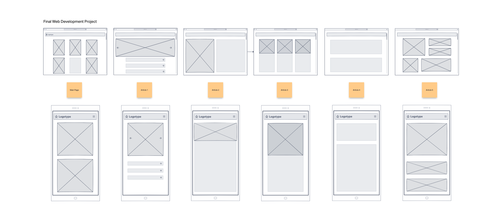

Name: Liew Dao Yu Roscoe
Introduction:
This is an online magazine website that features carefully selected gym content aimed at gentlemen.
The workouts showcased on the site are primarily those of internationally renowned celebrities.
For my structure, i have chosen a clean and minimalistic design for my homepage,
whereas for every subsequent webpage, its is tailored to the celebrity's image.
Each article introduces the celebrities and their workout routine that helped them to get those shredded body.
Inspiration:
As someone who exercises regularly and enjoys reading magazines, I found inspiration for my website from publications
such as Vogue and Men's Health. These magazines not only provide inspiration for fitness enthusiasts,
but also allow me to appreciate the design of the layouts and templates used. Additionally, as a fan of Hollywood movies,
I decided to feature internationally renowned actors in my website, who are known for their fitness and dedication to health.
By combining my interests in fitness and Hollywood, I aim to create a unique and engaging website that caters to a wide audience
of men who are interested in achieving their fitness goals.
Accessibility:
For my website, I have added media query to make it responsive so that my website can be both accessed by smaller and larger screens.
Also i have added text alternatives for my images so that users who are visually impaired are able to know the content of my webpage.
Lastly, i also used descriptive link text for users who are visually impaired to nagivate my website with minimal confusion.
Usability:
For the usability, I have ensure that my website layouts are intuitive, efficient, and easy to navigate.
For example, throughout my entire website, navigation bar for both small and large screens are placed at the top of the screen.
Layout used for each webpage are also simple to navigate.
Use of appropriate colour scheme, colour contrast and font size.
What i have learnt:
I have come to realised that coding from scratch allows me to have full accessibility to my codes whereas if i were to copy and
modify the codes from online, it might sometimes break my code and will cause me to have lots of errors to debug. Also, with my
website, i now have a deeper understanding of HTML and CSS syntax. From using 3 days to code out my homepage to subsequently able to
code 2 webpage in one day, I am now able to use many functions and properties to create a website. Such as creating pop-up menu,
accordion, parallax text and image and understanding the properties of CSS. I also learnt the principles of designing a good website,
and have attempted to showcase it on this website.
Evaluations:
What i could have done better is the use of Javascript, as i only used 2 Javascipt on my website. One is for the navigation bar and
another is for the image carousel. With many open source Javascipt online, it will certainly help me to have more imersively designs
and animations. It will also save me lots of time as i am able to refer to existing codes instead of having me to do trial and error.
Also i feel like if i have more time, i can have a much more polished design for my some of my webpage, such as having a better user interface
using a better or different colour scheme or playing around with gradients.
Resources:
W3Schools (2022). HTML Tutorial. [online] W3schools.com. Available at: https://www.w3schools.com/html/default.asp.
flexslider.woothemes.com. (n.d.). FlexSlider 2. [online] Available at: http://flexslider.woothemes.com/.
fontawesome.com. (n.d.). Editing Icons | Font Awesome. [online] Available at: https://fontawesome.com/icons/categories/editing [Accessed 13 Mar. 2023].
Muscle & Strength. (2020). Hollywood Muscle: Zac Efron Inspired Workout Routine. [online] Available at: https://www.muscleandstrength.com/workouts/zac-efron-workout [Accessed 13 Mar. 2023].
Muscle & Strength. (2015). Hugh Jackman’s Workout: Strong, Lean & Powerful. [online] Available at: https://www.muscleandstrength.com/workouts/hugh-jackman-workout-routine.
Cooper, E. (2021). Explained: Chris Evans’ No-Cardio Training Plan for ‘Captain America’. [online] Men’s Health. Available at: https://www.menshealth.com/uk/fitness/a35290686/chris-evans-captain-america-workout-training-avengers/.
SET, S.F. (n.d.). What is Chris Hemsworth’s Workout Routine? [online] SET FOR SET. Available at: https://www.setforset.com/blogs/news/chris-hemsworth-workout [Accessed 13 Mar. 2023].
Thorp, C. (2019) Spiderman workout: How to get shredded like Tom Holland, [online] Men’s Health. Available at: https://www.mensjournal.com/health-fitness/tom-holland-spider-man-workout/ [Accessed: March 13, 2023].
Appendices:
Wireframe:

Mockups (Large Screen):


 Mockups (Small Screen):
Mockups (Small Screen):